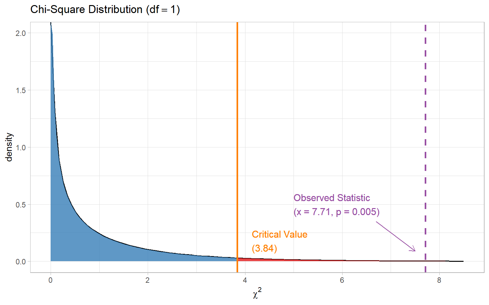

Set up a null hypothesis \(H_0\)
Set up alternative hypothesis \(H_a\)
In this module we’re going to discuss more things you can do with a \(\chi^2\) sampling distribution:
What if we have more than one categorical variable?
We can arrange these data in a contingency table.
Example: Race and death penalty sentences
Data from Unah & Boger (2001), death-eligible cases in North Carolina from 1993 to 1997, white victim.
| Death Sentence | |||
|---|---|---|---|
| Defendant’s Race | Yes | No | Total |
| Nonwhite | 33 | 251 | 284 |
| White | 33 | 508 | 541 |
| Total | 66 | 759 | 825 |
What might we want to compare in this table?
Contingency tables give information about the joint, marginal, and conditional distributions of the observed variables
| Death Sentence | |||
|---|---|---|---|
| Defendant’s Race | Yes | No | Total |
| Nonwhite | 33 | 251 | 284 |
| White | 33 | 508 | 541 |
| Total | 66 | 759 | 825 |
\(P(\text{white} \cap \text{death sentence}) =\) \(\frac{33}{825} = .04\) (joint)
\(P(\text{nonwhite} \cap \text{death sentence}) =\) \(\frac{33}{825} = .04\) (joint)
\(P(\text{white}) =\) \(\frac{541}{825} = .66\) (marginal)
\(P(\text{nonwhite}) =\) \(\frac{284}{825} = .34\) (marginal)
\(P(\text{death sentence} | \text{white}) =\) \(\frac{33}{541} = .06\) (conditional)
\(P(\text{death sentence} | \text{nonwhite}) =\) \(\frac{33}{284} = .12\) (conditional)
In the \(\chi^2\) test of independence, we want to know if two categorical variables are related (dependent on each other)
\[H_0: \text{Categorical variables are independent}\]
\[H_1: \text{Categorical variables are related}\]
How do we define independence?
If variables \(X\) and \(Y\) are independent, then \(P(X \cap Y) = P(X)P(Y)\)
Joint distribution is the product of marginal distributions
Similar to flipping two coins:
\[P\left[\text{(flip 1 = heads)} \cap \text{(flip 2 = heads)}\right] = \frac{1}{2}\times\frac{1}{2} = \frac{1}{4}\]
We next need to calculate expected frequencies based on \(H_0\)
First, a bit of notation: We often index rows with a subscript i, and columns with a subscript j
\(R_i\): category \(i\) of row variable \(R\)
\(C_j\): category \(j\) of column variable \(C\)
\(N\): total number of observations
\(f_{Oi}\): observed marginal frequency for row \(i\)
\(f_{Oj}\): observed marginal frequency for column \(j\)
\(f_{Eij}\): expected joint frequency for row \(i\) and column \(j\)
We next need to calculate expected frequencies based on \(H_0\)
To get expected frequencies, we use the observed marginal frequencies to determine the expected joint frequencies.
Thus, under the assumption of independence,
\[P(R_i \cap C_j) = P(R_i)P(C_j) = \bigg(\frac{f_{Oi}}{N}\bigg) \bigg(\frac{f_{Oj}}{N}\bigg) = \frac{f_{Oi}f_{Oj}}{N^2}\] \[f_{Eij} = N\times P(R_i \cap C_j) = N\bigg(\frac{f_{Oi}f_{Oj}}{N^2}\bigg) = \frac{f_{Oi}f_{Oj}}{N}\]
| Death Sentence | |||
|---|---|---|---|
| Defendant’s Race | Yes | No | Total |
| Nonwhite | 33 | 251 | 284 |
| White | 33 | 508 | 541 |
| Total | 66 | 759 | 825 |
\[f_{Eij} = \frac{f_{Oi}f_{Oj}}{N}\]
\(f_{E}\) (nonwhite, death) = \(\frac{284 \times 66}{825} = \boldsymbol{22.72}\)
\(f_{E}\) (white, death) = \(\frac{541 \times 66}{825} = \boldsymbol{43.28}\)
\(f_{E}\) (nonwhite, no death) = \(\frac{284 \times 759}{825} = \boldsymbol{261.28}\)
\(f_{E}\) (white, no death) = \(\frac{541 \times 759}{825} = \boldsymbol{497.72}\)
The \(\chi^2\) test statistic is computed in the same way as for the GoF test
\[\chi^2_{\text{obs}} = \sum_{i=1}^R \sum_{j=1}^C \frac{(f_{Oij} - f_{Eij})^2}{f_{Eij}}\]
\[\frac{(33 - 22.72)^2}{22.72} + \frac{(33 - 43.28)^2}{43.28} + \frac{(251 - 261.28)^2}{261.28} + \frac{(508 - 497.72)^2}{497.72} = 7.71\]
Given the marginal counts, how many cell counts can be freely chosen?
| \(C_1\) | \(C_2\) | \(C_3\) | Total | |
|---|---|---|---|---|
| \(R_1\) | 1 | 4 | 10 | |
| \(R_2\) | 15 | |||
| Total | 5 | 5 | 15 | 25 |
Given the marginal counts, how many cell counts can be freely chosen?
| \(C_1\) | \(C_2\) | \(C_3\) | Total | |
|---|---|---|---|---|
| \(R_1\) | 1 | 4 | 5 | 10 |
| \(R_2\) | 4 | 1 | 5 | 15 |
| Total | 5 | 5 | 15 | 25 |
The degrees of freedom for the \(\chi^2\) test of independence equals \((R-1)(C-1)\)
\[df = (R-1)(C-1) = (2-1)(2-1) = 1\]

With small sample sizes, the \(\chi^2\) test of independence may be overly liberal
Yates’ correction attempts to correct for the “discontinuity” implied by having small frequencies
\[\chi^2_{\text{obs}} = \sum_{i=1}^R \sum_{j=1}^C \frac{(|f_{Oij} - f_{Eij}| - 0.5)^2}{f_{Eij}}\]
Yates’ correction is conservative
The corrected \(p\)-value is necessarily higher than the uncorrected \(p\)-value
Ordinary \(\chi^2\) test developed by Karl Pearson
Egon Pearson is K. Pearson’s son, another leader of early statistics!
Same \(H_0\) and \(H_1\) as Pearson’s \(\chi^2\) test of independence
Test statistic:
\[\chi^2(df) = \frac{\text{Pearson's } \chi^2 \times N}{N - 1}\]
\(\chi^2\): test statistic from ordinary test of independence
\(df\): \((R - 1) \times (C - 1)\)
\(N\) total frequency
E. Pearson’s adjusted \(\chi^2\) test statistic is always larger than Pearson’s \(\chi^2\)
\(p\)-value of E. Pearson’s test is always smaller than Pearson’s \(p\)-value
We say that E. Pearson’s test is liberal
E. Pearson’s test has higher statistical power to reject the false \(H_0\)
\[\chi^2_{\text{KP}} < \chi^2_{\text{EP}}\]
\[p_{_\text{KP}} > p_{_\text{EP}}\]
Slightly better performance when cell has a small expected frequency
Yates’ \(\chi^2\) and E. Pearson’s adjusted \(\chi^2\) change the calculation of \(\chi^2\). Fisher’s exact test uses another method to overcome limitations of the \(\chi^2\) test of independence.
Treat the observed marginals as fixed
Find all possible sets of cell counts
Calculate the probability of each set of cell counts (hypergeometric distribution)
Sum the probabilities corresponding to cell count sets that are more extreme (further from \(H_0\)) than the observed data \(\rightarrow\) this is the \(p\)-value
Limitations:
For large sample sizes, the standard \(\chi^2\) test is best.
Default in R uses Yates’ correction, which helps with smaller samples and will have minimal cost in larger samples.
When at least one cell has expected frequency < 5, instead consider:
If one cell has expected frequency = 1, choose E. Pearson’s adjusted \(\chi^2\)
If all cells have expected frequency > 1, choose Fisher’s exact test
Campbell, I. (2007). Chi-square and Fisher-Irwin tests of two-by-two tables with small sample recommendations. Statistics in Medicine, 26, 3661-3675.